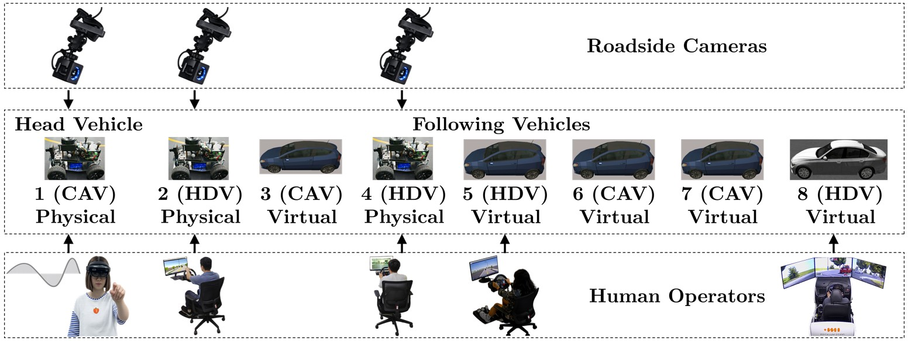
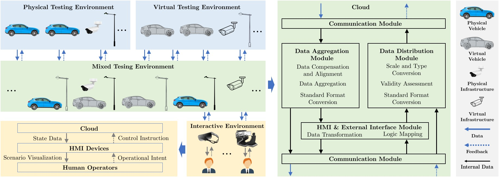
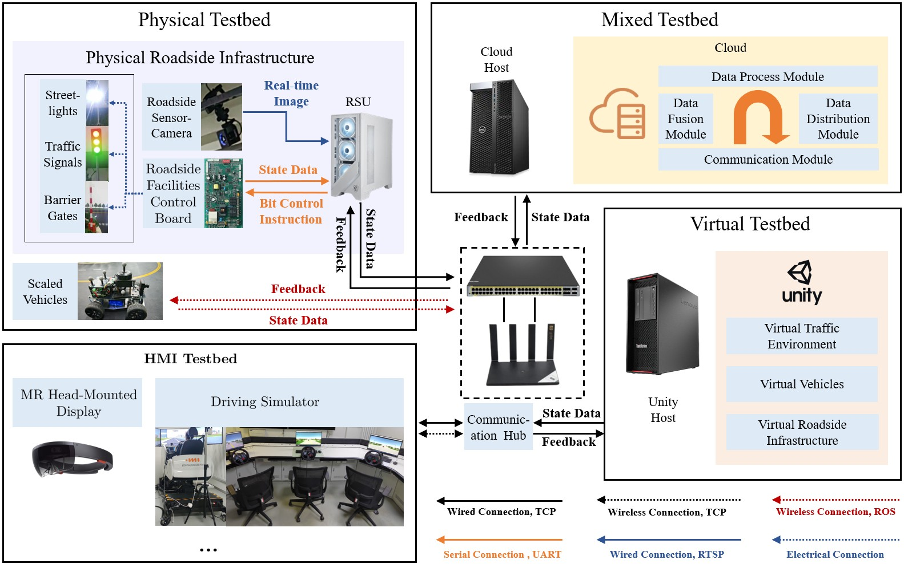
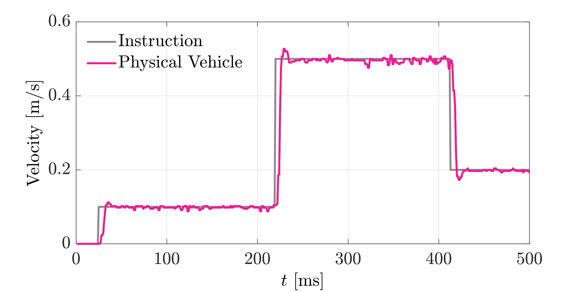
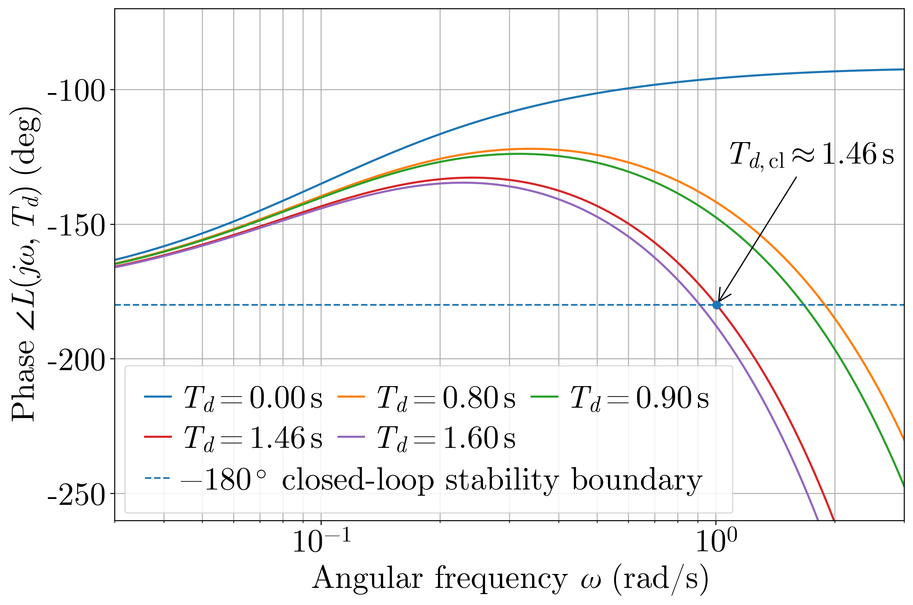
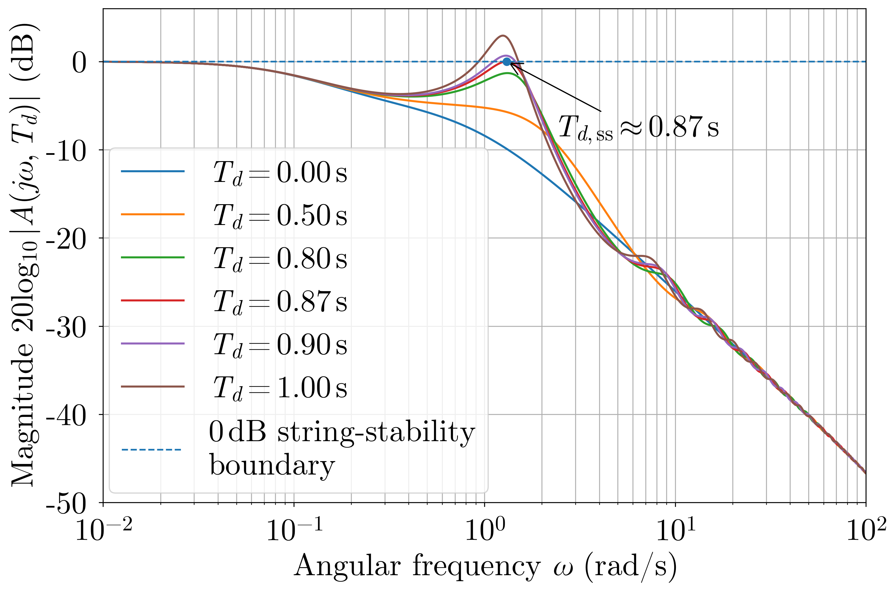
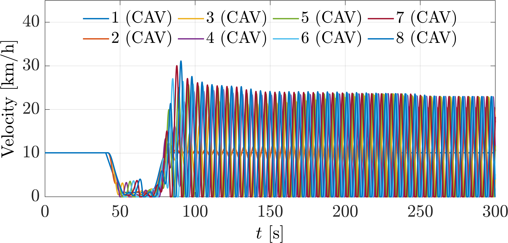
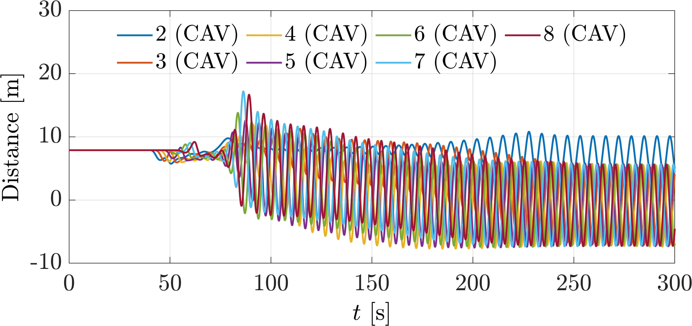

Sufficient testing under corner cases is critical for the long-term operation of vehicle-infrastructure cooperation systems (VICS). However, existing corner-case generation methods are primarily AI-driven, and VICS testing under corner cases is typically limited to simulation. In this paper, we introduce an L5 ''Interactable'' level to the VICS digital twin (VICS-DT) taxonomy, extending beyond the conventional L4 ''Optimizable'' level. We further propose an L5-level VICS testing framework, IMPACT (Interactive Mixed-digital-twin Paradigm for Advanced Cooperative vehicle-infrastructure Testing). By enabling direct human interactions with VICS entities, IMPACT incorporates highly uncertain and unpredictable human behaviors into the testing loop, naturally generating high-quality corner cases that complement AI-based methods. Furthermore, the mixedDT-enabled ''Physical-Virtual Action Interaction'' facilitates safe VICS testing under corner cases, incorporating real-world environments and entities rather than purely in simulation. Finally, we implement IMPACT on the I-VIT (Interactive Vehicle-Infrastructure Testbed), and experiments demonstrate its effectiveness.


It is worth noting that the normal operation of the IMPACT framework and the I-VIT platform relies on reliable, low-latency communication. Excessive communication delays or sustained packet loss may destabilize the platform. To illustrate this issue, we conduct a latency sensitivity analysis of a typical Cooperative Adaptive Cruise Control (CACC) platooning test. The results show that the platoon loses closed-loop stability when the wireless communication delay between the cloud and the vehicles exceeds 1.46 s. Therefore, before conducting VICS tests on the I-VIT platform, latency sensitivity analysis and latency measurements should be performed to verify that the communication environment can support stable operation.
The complete analysis procedure is provided below. If the mathematical notation does not render correctly, please download the PDF version for viewing.
Complete Latency Sensitivity Analysis Procedure
Latency sensitivity analysis is essential for identifying the operational boundaries of the system. Accordingly, we present a theoretical analysis below. Within the platform, the primary latency-sensitive link is the wireless communication between the physical vehicles and the cloud. Prior to the latency analysis, we first measured the step response of the scaled physical vehicle, as shown in Figure 1. The corresponding \(2\%\) settling time is \(15~\mathrm{ms}\).

Considering a representative platooning scenario consistent with the “Experimental Setup” presented at the beginning of this webpage, we analyze an eight-vehicle CAV platoon consisting entirely of scaled physical vehicles.
I-VIT adopts a cloud-based control architecture in which the cloud aggregates the states of all vehicles, computes the complete CACC command for each following vehicle, and transmits the command to the corresponding scaled physical vehicle for execution. The measured latency of the motion capture system used to provide the physical-vehicle states to the cloud is \(5~\mathrm{ms}\), which is sufficiently small to be neglected in the present analysis. The cloud is therefore assumed to have access to the real-time platoon states. Since the computation time required to generate the CACC-based control commands is also negligible, the following analysis focuses on a constant cloud-to-vehicle command delay \(T_d\). Consistent with the experimental setup in the main text, the platoon considered in this analysis adopts a predecessor–leader following (PLF) topology.
At time \(t\), the cloud computes the command for the \(i\)-th following vehicle as
\[ u_i^{\mathrm{c}}(t) = k_s\left[s_i(t)-s^\ast\right] + k_l\left[v_1(t)-v_i(t)\right] + k_f\left[v_{i-1}(t)-v_i(t)\right], \]where \(k_s=0.10\), \(k_l=0.50\), \(k_f=0.50\), and \(s^\ast=7.89~\mathrm{m}\). Because the physical vehicle executes the cloud-generated command after the downlink delay, the actual control input applied at time \(t\) is
\[ u_i(t)=u_i^{\mathrm{c}}(t-T_d). \]Equivalently,
\[ u_i(t) = k_s\left[s_i(t-T_d)-s^\ast\right] + k_l\left[v_1(t-T_d)-v_i(t-T_d)\right] + k_f\left[v_{i-1}(t-T_d)-v_i(t-T_d)\right]. \]Accordingly, the delayed quantities in the above expression arise from the delayed execution of the complete cloud-generated command, rather than from delayed local sensing or delayed access to individual vehicle states. The longitudinal actuation dynamics are approximated by a first-order system \(\tau\dot{a}_i+a_i=u_i\). Given the measured \(2\%\) settling time of \(15~\mathrm{ms}\), the corresponding actuator time constant is \(\tau\approx0.003834~\mathrm{s}\).
Closed-loop stability concerns whether the state of each vehicle eventually converges after the vehicle is subjected to a disturbance. By linearizing around the equilibrium and applying the Laplace transform, the characteristic equation associated with each following vehicle is
\[ D(s,T_d) = s^2(\tau s+1) + e^{-sT_d}\left[k_s+(k_l+k_f)s\right] = 0. \]To determine the admissible communication delay, we consider the first imaginary-axis crossing by setting \(s=j\omega\). The magnitude condition of the characteristic equation is
\[ \omega^4\left(1+\tau^2\omega^2\right) = k_s^2+(k_l+k_f)^2\omega^2. \]Substituting the adopted parameters and solving this equation yields the cross-over frequency \(\omega_{\mathrm{cl}}\approx1.005~\mathrm{rad/s}\). The corresponding closed-loop delay margin is
\[ T_{d,\mathrm{cl}} = \frac{ \tan^{-1}\left(\frac{(k_l+k_f)\omega_{\mathrm{cl}}}{k_s}\right) -\tan^{-1}\left(\tau\omega_{\mathrm{cl}}\right) }{\omega_{\mathrm{cl}}} \approx1.46~\mathrm{s}. \]Therefore, the closed-loop system of any individual vehicle remains internally stable when \(\boxed{T_d<1.46~\mathrm{s}}\). Figure 2(a) shows the Bode phase plots of the open-loop transfer function used to evaluate closed-loop stability under different cloud-to-vehicle command delays. The delay introduces additional phase lag without changing the gain crossover frequency, and the phase reaches \(-180^\circ\) at \(T_d\approx1.46~\mathrm{s}\), defining the closed-loop stability limit.
(a) Closed-Loop Stability

(b) String Stability

String stability requires that spacing disturbances are attenuated rather than amplified along the platoon. The spacing-error propagation between consecutive vehicles is governed by \(E_{i+1}(s)=A(s,T_d)E_i(s)\), where the transfer function is
\[ A(s,T_d) = \frac{ e^{-sT_d}(k_s+k_fs) }{ s^2(\tau s+1) +e^{-sT_d}\left[k_s+(k_l+k_f)s\right] }. \]Accordingly, spacing-error string stability requires \(\sup_{\omega\geq0}\left|A(j\omega,T_d)\right|\leq1\). Because \(A(0,T_d)=1\), the critical delay corresponds to the first nonzero frequency at which the magnitude reaches unity. This critical boundary is obtained by jointly solving
\[ \left|A(j\omega,T_d)\right|=1 \quad\text{and}\quad \frac{\partial\left|A(j\omega,T_d)\right|}{\partial\omega}=0. \]Solving these equations yields the critical frequency \(\omega_{\mathrm{ss}}\approx1.306~\mathrm{rad/s}\) and the corresponding string-stability delay margin
\[ T_{d,\mathrm{ss}}\approx0.87~\mathrm{s}. \]When \(0.87~\mathrm{s}<T_d<1.46~\mathrm{s}\), individual vehicles remain stable, but disturbances may be amplified towards the tail of the platoon, since \(E_8(s)/E_2(s)=A^6(s,T_d)\). Therefore, spacing-error string stability for the entire platoon requires \(\boxed{T_d\leq0.87~\mathrm{s}}\). Figure 2(b) shows the Bode magnitude plots of the inter-vehicle spacing-error propagation transfer function. The propagation gain reaches the \(0~\mathrm{dB}\) boundary at \(T_d\approx0.87~\mathrm{s}\), beyond which spacing errors are amplified along the platoon. Therefore, spacing-error string stability imposes a more restrictive delay requirement than closed-loop stability.
Velocity Profiles

Inter-Vehicle Distance Profiles

The measured communication latency between the scaled physical vehicles and the cloud on the I-VIT platform follows a Gaussian distribution with a mean of \(1.33~\mathrm{ms}\) and a standard deviation of \(0.66~\mathrm{ms}\). This latency is substantially lower than the derived thresholds and therefore fully satisfies the requirements for conducting CACC platooning experiments in terms of both closed-loop platoon stability and spacing-error string stability.
However, when the communication latency exceeds a certain threshold, the platform can no longer operate stably. Taking the classical CACC platooning test as an example, we conducted platoon simulations under different communication delays using a longitudinal dynamics model calibrated to the response characteristics of the scaled physical vehicles. As shown in Figure 3, when the communication latency between the cloud and the vehicles reaches \(1.50~\mathrm{s}\), exceeding the closed-loop stability threshold of \(1.46~\mathrm{s}\), a velocity disturbance introduced by the head vehicle causes both the vehicle velocities and inter-vehicle spacings to diverge throughout the platoon. Consequently, the platform can no longer operate stably.